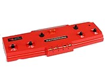

| Name | Magnavox Odyssey | Odyssey series (11 consoles) |
TV Tennis Electrotennis | Home Pong |
|---|---|---|---|---|
| Manufacturer | Magnavox | Magnavox, Philips | Epoch Co. | Atari, Sears Tele-Games |
| Image |  | |||
| Launch price | US$100 (equivalent to $599 in 2019) | US$100–230 (equivalent to $466–1071 in 2019) | ¥20,000 (equivalent to $352 in 2019) | US$98.95 (equivalent to $461 in 2019) |
| Release date |
|
|
|
|
| Media | Printed circuit board | Various | Inbuilt chip | Inbuilt chip |
| Accessories (retail) | Shooting Gallery | None | Wireless connection to a TV through an UHF antenna | None |
| Sales | 350,000 | Unknown | 10,000 | 150,000 |
| Name | Binatone TV Master | Coleco Telstar series (14 models) |
Color TV-Game series (5 consoles) |
|---|---|---|---|
| Manufacturer | Binatone | Coleco | Nintendo |
| Image | |||
| Launch price | $35 (equivalent to £247, or $362, in 2019) | US$50 (equivalent to $220 in 2019) | ¥8300–48,000 (equivalent to $124–714 in 2019) |
| Release date |
|
|
|
| Media | Inbuilt chip | Inbuilt chip (most models) Cartridge (Telstar Arcade, 1977) |
Inbuilt chip |
| Accessories (retail) | Paddles and light gun | Controller styles | None |
| Sales | Unknown | 1 million | 3 million |